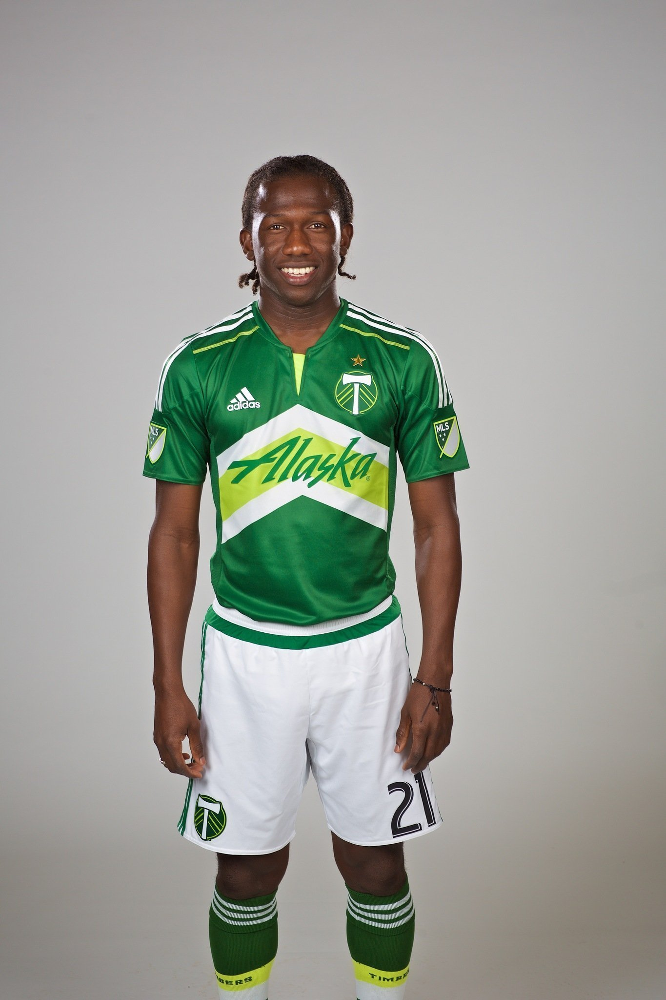

Following the 1994 FIFA World Cup, the U.S Soccer Federation decided it was the right time to create a Division 1 soccer league within the country. Starting play in 1996 with 10 teams, Major League Soccer has now completed 25 seasons and expanded to a whopping 27 clubs, with plans out to 30 by the 2023 season.
Throughout that history, the league has seen a number of aggressive, tough, and physical players pass through the ranks, coming from different countries across the globe.

This is Diego Chara of the Portland Timbers. He was the original inspiration for this quest. Since joining the Timbers in 2011, he has made a career out of playing hardball, many times over the line in the eyes of the official, and of course, rival fans.
But how does Chara stack up to the dirtiest players in league history?
Lets get stuck in.
library(tidyverse)## -- Attaching packages --------------------------------------- tidyverse 1.3.1 --## v ggplot2 3.3.3 v purrr 0.3.4
## v tibble 3.1.1 v dplyr 1.0.5
## v tidyr 1.1.3 v stringr 1.4.0
## v readr 1.4.0 v forcats 0.5.1## Warning: package 'tidyr' was built under R version 4.0.5## Warning: package 'dplyr' was built under R version 4.0.5## Warning: package 'forcats' was built under R version 4.0.5## -- Conflicts ------------------------------------------ tidyverse_conflicts() --
## x dplyr::filter() masks stats::filter()
## x dplyr::lag() masks stats::lag()library(ggrepel)## Warning: package 'ggrepel' was built under R version 4.0.4library(ggalt)## Warning: package 'ggalt' was built under R version 4.0.4## Registered S3 methods overwritten by 'ggalt':
## method from
## grid.draw.absoluteGrob ggplot2
## grobHeight.absoluteGrob ggplot2
## grobWidth.absoluteGrob ggplot2
## grobX.absoluteGrob ggplot2
## grobY.absoluteGrob ggplot2library(gt)## Warning: package 'gt' was built under R version 4.0.4MLS <- read_csv("MLSDP.csv")##
## -- Column specification --------------------------------------------------------
## cols(
## Player = col_character(),
## Nation = col_character(),
## Pos = col_character(),
## Squad = col_character(),
## Born = col_double(),
## X90s = col_double(),
## CrdY = col_double(),
## CrdR = col_double(),
## Fls = col_double()
## )The lone data set I’m using has been collected through Sports Reference under the “Misc. Stats: Players” data for the MLS. This data set is a collection of every player throughout the 26 year history of the league. The key discipline statistics I’m going to rely on to start comparing each of these players are yellow cards, red cards, and fouls. I also included the number of ‘90s’ each player played in the league, which is more accurate than simple appearances since some players don’t play the full match in each appearance.
First, lets take a look at the Top 10 players in all time bookings, yellow cards and red cards.
MLS %>%
group_by(Player) %>%
summarise(
Reds = sum(CrdR),
Yellows = sum(CrdY),
Booking = sum(Reds, Yellows)
) %>%
arrange(desc(Booking)) %>%
top_n(10)-> MLSSB## Selecting by BookingMLSSBLong <- MLSSB %>%
pivot_longer(
cols=("Yellows" | "Reds"),
names_to="Bookings",
values_to="Cards") %>%
arrange(desc(Bookings)) %>%
mutate(BookingOrder = factor(Bookings))The first question to answer is, which players have been booked more than anyone else?
ggplot() +
geom_bar(data = MLSSBLong, aes(x=reorder(Player, Cards), weight=Cards, fill=BookingOrder)) +
coord_flip() +
scale_fill_manual(values = c("red", "gold")) +
theme_minimal() +
labs(x="", y="Total Bookings", title="With 22 Seasons, Kyle Beckerman Has A Clear Lead In Bookings", subtitle="But several others have amassed more red cards than Beckerman in less time.", caption="Source: Sports Reference | By Peyton Thomas") +
theme(
plot.title = element_text(size = 13, face = "bold"),
axis.title = element_text(size = 10),
plot.subtitle = element_text(size=10),
panel.grid.minor = element_blank()
) Beckerman, of course Beckerman. Kyle Beckerman, the Real Salt Lake midfielder with legs of steel. Our friend Diego Chara also managed to finish runner up. So is that it then? Is Beckerman clearly the dirtiest player in MLS?
Beckerman, of course Beckerman. Kyle Beckerman, the Real Salt Lake midfielder with legs of steel. Our friend Diego Chara also managed to finish runner up. So is that it then? Is Beckerman clearly the dirtiest player in MLS?
Well not exactly, this model favors players who have managed to play more minutes within the league, since there is no basis that can balance these bookings against how long each player has played. Kyle Beckerman with an outstanding 22 seasons and 457.4 ‘90s’ has a significant advantage over everyone else. Chara also hasn’t done too bad for himself with 10 seasons and 275 ‘90s’.
If these players have played so many games compared to everyone else, what is the average amount of appearances and specifically yellow cards for your Average Joe?
First, lets take out Goalkeepers, since no one really cares about the “time wasting” yellows that they seldom pick up.
We can also remove the players in our dataset who have never taken the field to play a single minute.
FieldPlayers <- c("DF", "DFMF", "FW", "FWDF", "FWMF", "FWGK", "MF", "MFDF", "MFFW")MLS %>%
group_by(Player) %>%
filter(
X90s > 0,
Pos %in% FieldPlayers) %>%
summarize(
Games = sum(`X90s`),
YellowCards = sum(CrdY)) -> MLSAPPPerfect, now lets find the medians for what we have left.
MLSAPP %>% summarize(
`Median Games` = median(Games),
`Median Yellows` = median(YellowCards))## # A tibble: 1 x 2
## `Median Games` `Median Yellows`
## <dbl> <dbl>
## 1 17.9 3A little below 18 ‘90s’ paired with just 3 yellow cards for our Average Joe. A far sight from Beckerman’s tally.
Lets throw those median values into context, by grouping together all our Average Joes, which includes all field players who have played at least one minute.
MLS %>% group_by(Player) %>%
filter(
X90s > 0,
Pos %in% FieldPlayers) %>%
summarize(
Bookings = sum(CrdY + CrdR),
Years = n(),
Games = sum(X90s),
BPG = mean(Bookings/Games)) -> MLSAJThroughout his career, Beckerman has amassed an impressive ~0.289 bookings per game. Which has helped him pull away on the all time leaderboard. However lets tally how many experienced players have an even higher Bookings/Game rate than our bookings leader.
We’ll also create a dataframe for Beckerman himself.
MLSAJ %>% filter(
Years > 5,
Games > 100,
BPG > .28858
) -> MLSFPDMLSAJ %>% filter(Player == "Kyle Beckerman") -> KBggplot() +
geom_point(
data=MLSAJ,
aes(x=Games, y=Bookings, size=Years),
color="grey",
alpha=.5) +
geom_point(
data=MLSFPD,
aes(x=Games, y=Bookings, size=Years),
color="#013A81",
alpha=.8) +
geom_point(
data=KB,
aes(x=Games, y=Bookings, size=Years),
color="#B30838") +
geom_text_repel(
data=KB,
aes(x=Games, y=Bookings, label=Player)
) + geom_smooth(data=MLSAJ, aes(x=Games, y=Bookings), method="lm") + theme_minimal() +
labs(title="Kyle Beckerman Is Still The Bookings King", subtitle="However, 25 players with heavy experience surpass Beckerman in bookings per match.", caption="Source: Sports Reference | By Peyton Thomas") +
theme(
plot.title = element_text(size = 16, face = "bold"),
axis.title = element_text(size = 8),
plot.subtitle = element_text(size=10),
panel.grid.minor = element_blank()
)## `geom_smooth()` using formula 'y ~ x' The blue line separates the median number of Bookings/Game created from our Average Joe. All players below the line are relatively “clean”, while players above the line are “dirty” compared to the average.
The blue line separates the median number of Bookings/Game created from our Average Joe. All players below the line are relatively “clean”, while players above the line are “dirty” compared to the average.
Clearly, Beckerman is in a league of his own in terms of games and yellows combined. But using his clubs colors, there are more than 2 dozen players in blue, that not only have a great wealth of experience, but also a greater Bookings/Game rate than Beckerman. It may not be so clear after all.
Lets leave everyone at the mercy of the same jury, by creating a “Dirtyness Rating” for every eligible player.
In order to be the dirtiest player in MLS history, you must be Notorious. In this case, that means playing more than 68 ‘90s’. Why 68? Well there are 34 games in an MLS season so 68 ‘90s’ would be 2 full seasons on the pitch. At least 10 different bookings, and finally, seperate appearances in at least 3 different seasons throughout each players MLS career.
Notorious <- MLS %>% group_by(Player) %>%
summarize(
Bookings = sum(CrdY + CrdR),
Years = n(),
Games = sum(X90s),
YPG = mean(CrdY/Games),
RPG = mean(CrdR/Games),
FPG = mean(Fls/Games)) %>%
filter(Games > 68,
Bookings > 10,
Years > 2) %>%
ungroup()Along with filtering our Notorious players, I also created average discipline ratings per game for each player, to help limit the advantage for a higher number of appearances. Leaving us with just 539 candidates to become the “Dirtiest Player in the History of MLS.”
We are almost ready to throw our players into our formula, however lets slide into one more reckless factor. A name bonus.
There is an interesting phenomenon in MLS that players who have played in the league with a name starting with “Diego C” carry a reputation of being extremely dirty, compared to other players whose names do not start with “Diego C”.
So lets award all players who have a name that starts with “Diego C” a 1 point bonus in our formula.
Notorious %>%
mutate(Bonus = case_when(
grepl("Diego C", Player) ~ 1,
grepl("", Player) ~ 0)) -> NameBonusHere we go, its time to throw every eligible player through our “Dirtyness Formula” which reads as follows.
Dirtyness Rating = (((YPG.34 + RPG1.7 + FPG.017)(Games^.7))*5+(Bonus))
Yellows/Game, Reds/Game, and Fouls/Game have all been weighted based on how often they occur in a match, and how ‘dirty’ each type of action is perceived. For example, a red card is going to improve your dirtyness rating more than a common foul.
These three values are then added together and multiplied by an exponential function Games^.7. This function provides a slight advantage to players who have played more games in the MLS. Essentially, experienced players are slightly dirtier since they have done it for longer.
Then, our value is multiplied by 5. The last step is to simply add in our bonus. Remember, all players with a name starting with “Diego C” will receive a 1 point bonus in their final Dirtyness Rating.
Okay, lets do this thing.
Dirtyness <- NameBonus %>% group_by(Player) %>%
mutate(DirtynessRating = (((YPG*.34 + RPG*1.7 + FPG*.017)*(Games^.7))*5+(Bonus))) %>%
ungroup()Top10 <- Dirtyness %>%
arrange(desc(DirtynessRating)) %>%
top_n(10, wt=DirtynessRating) Top10 %>%
select(Player, Years, Games, DirtynessRating) %>%
rename(`90s` = Games, `Dirtyness Rating` = DirtynessRating) %>%
gt() %>%
tab_header(
title = "Behind An Impressive Brigade Of Red Cards, Cole Tops The Pack",
subtitle = "Diego Chara of the Portland Timbers also cracks the Top 5 in dirtiest players in history of the league, using an absolutely fair, 100% objective, non-bias model."
) %>% tab_style(
style = cell_text(color = "black", weight = "bold", align = "left"),
locations = cells_title("title")
) %>% tab_style(
style = cell_text(color = "black", align = "left"),
locations = cells_title("subtitle")
) %>%
tab_source_note(
source_note = "Source: Sports Reference | By Peyton Thomas"
) %>% tab_style(
style = cell_text(color = "black", weight = "bold"),
locations = cells_body(
columns = vars(Player)
)
) %>%
tab_style(
style = cell_text(color = "black", weight = "normal"),
locations = cells_body(
columns = vars(Years),
)
) %>%
tab_style(
style = cell_text(color = "black", weight = "normal"),
locations = cells_body(
columns = vars(`90s`),
)
) %>%
tab_style(
style = cell_text(color = "black", weight = "normal"),
locations = cells_body(
columns = vars(`Dirtyness Rating`),
rows = `Dirtyness Rating` < 6.9
)
) %>%
tab_style(
style = cell_text(color = "red", weight = "bold"),
locations = cells_body(
columns = vars(`Dirtyness Rating`),
rows = `Dirtyness Rating` > 6.9
)
) %>%
opt_row_striping() %>%
opt_table_lines("none") %>%
tab_style(
style = cell_borders(sides = c("top", "bottom"),
color = "grey", weight = px(1)),
locations = cells_column_labels(everything())
)## Warning: The `.dots` argument of `group_by()` is deprecated as of dplyr 1.0.0.| Behind An Impressive Brigade Of Red Cards, Cole Tops The Pack | |||
|---|---|---|---|
| Diego Chara of the Portland Timbers also cracks the Top 5 in dirtiest players in history of the league, using an absolutely fair, 100% objective, non-bias model. | |||
| Player | Years | 90s | Dirtyness Rating |
| Ashley Cole | 3 | 82.4 | 6.908997 |
| Simo Valakari | 3 | 82.0 | 6.586732 |
| Leandro González Pirez | 4 | 108.0 | 6.436458 |
| Cristian Higuita | 5 | 80.8 | 5.831424 |
| Diego Chará | 10 | 275.0 | 5.634111 |
| Leonel Álvarez | 6 | 123.0 | 5.594897 |
| Jack Price | 3 | 69.8 | 5.557239 |
| Aníbal Godoy | 6 | 112.6 | 5.487606 |
| Matías Laba | 5 | 122.4 | 5.401492 |
| Kendall Waston | 7 | 152.7 | 5.276071 |
| Source: Sports Reference | By Peyton Thomas | |||
Ashley Cole played 3 seasons in MLS for a combined 82.4 ‘90s’. He didn’t clear the “Notorious” requirement by much, but he certainly left his mark on MLS with a crusade of dangerous challenges. With an impressive 0.0243 Red Cards/Game rate, almost twice as high as any other player, Cole has the highest Dirtyness Rating in the league at ~6.91, a margin of over 0.3 or 5% from Valakari, the runner-up. Cole was able to collect 6 red cards during his comparatively short spell in MLS, those 6 reds were also a whopping 33% of his total bookings, much higher than the average. In just 3 seasons, Cole was suspended for 9 separate games due to his proclivity for discipline.
Our friend Diego Chara also made his mark, coming in at the number 5 spot. With 275 ‘90s’ Chara has significantly more experience in the league than any other player who was able to crack the Top 10.
In the end, the title of “Dirtiest Player in the History of the MLS” goes to a player who made a name for his tough play on a different continent, before entering into MLS. Ashley Cole, congratulations, you earned it.